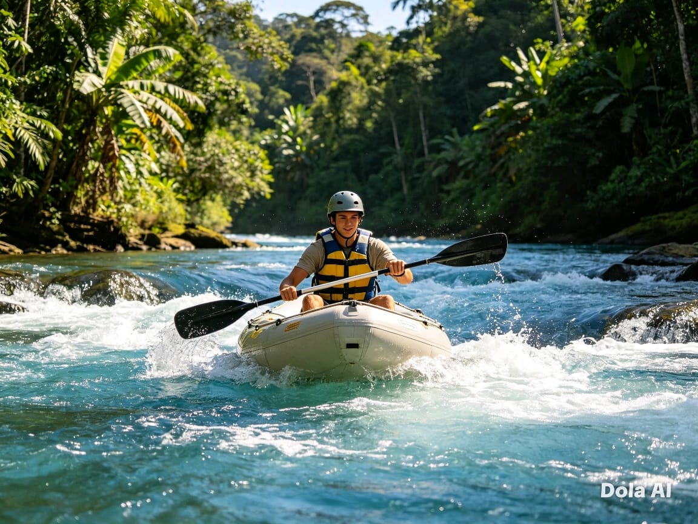
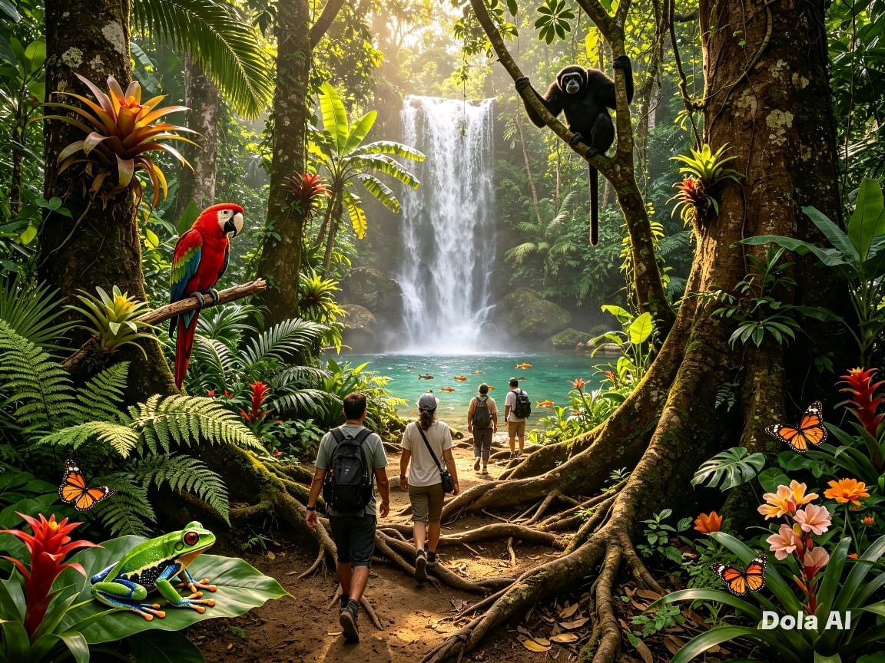
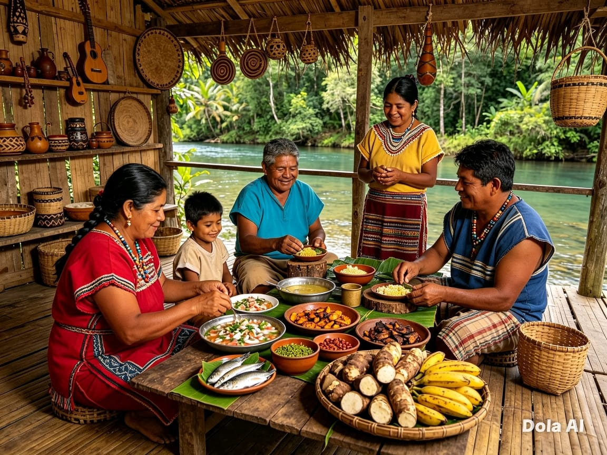

Bienvenido a Tena
Tena, capital de la provincia de Napo, es uno de los destinos turísticos más importantes de la Amazonía ecuatoriana. Conocida como la "Capital Mundial del Rafting", ofrece también senderos por la selva, experiencias de turismo comunitario, avistamiento de aves y una cultura viva que te cautivará.
Lo más destacado

🚣 Ríos y Rafting
Los ríos Tena, Pano y Misahuallí ofrecen emocionantes recorridos para todos los niveles.

🌿 Selva Amazónica
Bosques tropicales llenos de biodiversidad, cascadas y senderos naturales.

🏡 Comunidad y Cultura
Conoce las comunidades Kichwas de la Amazonía, sus tradiciones y gastronomía.